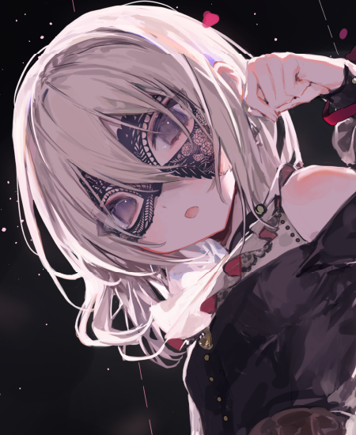
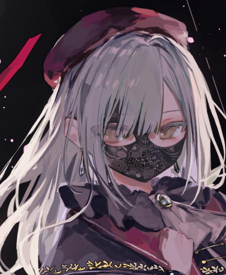
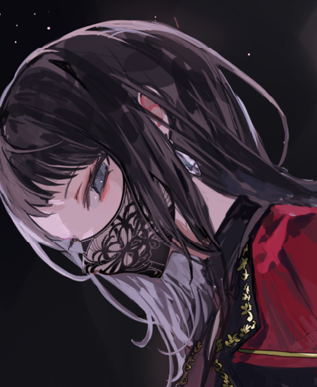
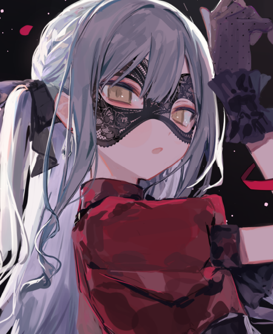

| 圖片 | 姓名 | 擔當 | 聲優 | 生日 | 身高 | 簡介 |
|---|---|---|---|---|---|---|
|  | 三角初華 | 主唱/吉他手 | 佐佐木李子 | 6月26日 | 160cm | 花咲川女子學園高中1年級，和椎名立希、八幡海鈴是同一個班級，因工作關係經常缺席。 偶像團體「sumimi」的吉他手，此時藝名為初華。 sumimi樂曲的作詞作曲擔當。 因其酷炫的外觀而受歡迎，喜歡觀星。 |
|  | 若葉睦 | 吉他手 | 渡瀨結月 | 1月14日 | 153cm | 月之森女子學園高中1年級。 曾是CRYCHIC的吉他手。 情感表達不多，基本上是一個沉默寡言的人。 父親是知名喜劇藝人若葉，母親是女演員森美奈美。 |
|  | 八幡海鈴 | 貝斯手 | 岡田夢以 | 4月7日 | 158cm | 花咲川女子學園高中1年級。 貝斯技巧達到了職業水準，同時擔任30個樂團的支援樂手。 和椎名立希、三角初華是同一個班級，經常互相和立希找茬。 |
 |
祐天寺若麥 | 鼓手 | 米澤茜 | 6月1日 | 164cm | 人氣上升中，並愛自稱為「喵姆親（日語：にゃむち）」的美妝類視頻博主，投稿在PosTube。 視頻主要是化妝類，但也在挑戰製作其他類型的視頻。 後來購入了電子鼓開始學習打鼓，左右手皆為主手（雙利手）使得她的演奏風格既華麗又特別。 |
|  | 豐川祥子 | 鍵盤手 | 高尾奏音 | 2月14日 | 155cm | 豐川祥子原是月之森女子學園初三學生，豐川集團的千金，與若葉睦、長崎爽世以及Morfonica五人是同校生，後來祥子轉學到羽丘女子學園，現為高中一年級生。 祥子是推動CRYCHIC組建的人，也是該樂隊的鍵盤手。 曾經的她個性溫柔、天真爛漫，擁有天才的作曲能力，是才華橫溢的少女。 但卻在某個雨天，以與往常截然不同的態度退出了CRYCHIC。 退出CRYCHIC後，她主導組建了Ave Mujica，擔任鍵盤手，還負責劇本和作曲。 |